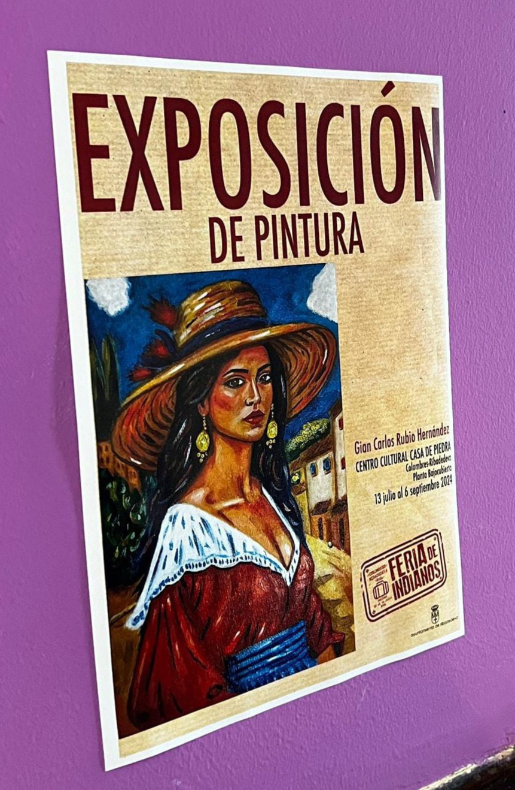

Esta exposición representa el inicio del recorrido artístico de Gian Carlos,
una primera muestra abierta al público donde el color y la figura se convierten
en los principales lenguajes de expresión.
Las obras presentadas exploran la identidad, la memoria y la emoción desde una mirada personal,
combinando fuerza cromática y sensibilidad narrativa. Cada pintura invita al espectador a detenerse,
observar y conectar con una historia que nace del instinto creativo.
Esta primera exposición no solo reúne un conjunto de obras, sino que marca el punto
de partida de una voz artística en construcción, comprometida con la expresión auténtica y el diálogo con el espectador.